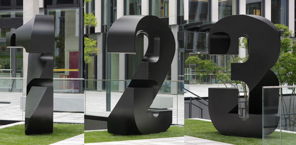
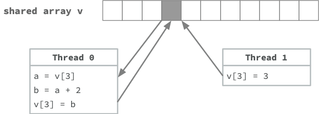

Code
x = 1 + 1
y = str(x)
print(x)
print(y)2
2DSAN 5500: Data Structures, Objects, and Algorithms in Python


x = 1 + 1
y = str(x)
print(x)
print(y)2
2print(x+1)
print(y+1)3TypeError: can only concatenate str (not "int") to strx is an int
int \(\implies\) thing you can do arithmetic addition withy is a str
str \(\implies\) thing you cannot do arithmetic addition with+ operator to represent concatenation when applied to two str objects)strs are just lists of characters…x = "Ceci n'est pas une string"
print(x)
print(type(x))
print(list(x))Ceci n'est pas une string
<class 'str'>
['C', 'e', 'c', 'i', ' ', 'n', "'", 'e', 's', 't', ' ', 'p', 'a', 's', ' ', 'u', 'n', 'e', ' ', 's', 't', 'r', 'i', 'n', 'g']\(\leadsto\) 2. Characters are stored in Python memory as int values (ASCII encodings)…
y = b"Ceci n'est pas une string"
print(y)
print(type(y))
print(list(y))b"Ceci n'est pas une string"
<class 'bytes'>
[67, 101, 99, 105, 32, 110, 39, 101, 115, 116, 32, 112, 97, 115, 32, 117, 110, 101, 32, 115, 116, 114, 105, 110, 103]\(\leadsto\) 3. Each int value is stored in computer memory as a byte (8 bits \(b_i \in \{0, 1\}\)):
print([format(character, 'b') for character in y])['1000011', '1100101', '1100011', '1101001', '100000', '1101110', '100111', '1100101', '1110011', '1110100', '100000', '1110000', '1100001', '1110011', '100000', '1110101', '1101110', '1100101', '100000', '1110011', '1110100', '1110010', '1101001', '1101110', '1100111']datetime.datetime example)__str__() and __repr__()




import pandas as pd
swim_df = pd.read_csv("assets/swimdata.csv", index_col=0)
swim_df.head()| name | age | distance | style | time | |
|---|---|---|---|---|---|
| 0 | Abi | 10 | 50m | Back | 41050 |
| 1 | Abi | 10 | 50m | Back | 43058 |
| 2 | Abi | 10 | 50m | Back | 42035 |
| 3 | Abi | 10 | 50m | Back | 43035 |
| 4 | Abi | 10 | 50m | Back | 39085 |
short_df = swim_df[swim_df['distance'] == "50m"].copy()
short_df.sort_values(['style', 'time'], ascending=True).groupby('style').head(1).drop(columns="age")| name | distance | style | time | |
|---|---|---|---|---|
| 101 | Calvin | 50m | Back | 37085 |
| 18 | Abi | 50m | Breast | 45071 |
| 111 | Calvin | 50m | Fly | 37018 |
| 65 | Aurora | 50m | Free | 28086 |
long_df = swim_df[swim_df['distance'] == "100m"].copy()
long_df.sort_values(['style', 'time'], ascending=True).groupby('style').head(1).drop(columns="age")| name | distance | style | time | |
|---|---|---|---|---|
| 72 | Bill | 100m | Back | 65075 |
| 276 | Tasmin | 100m | Breast | 80059 |
| 241 | Mike | 100m | Fly | 68038 |
| 151 | Dave | 100m | Free | 58067 |

class LinkedList:
@property
def root(self):
return self.__rootclass LinkedListNode:
@property content
@property next
class BinaryTree:
@property
def root(self):
return self.__rootclass BinaryTreeNode:
@property content
@property left
@property right
class QuadTree:
@property
def root(self):
return self.__rootclass QuadTreeNode:
@property content
@property nw
@property ne
@property sw
@property sekey)price_list = []
price_list.append(('Banana', 10))
price_list.append(('Apple', 2))
price_list.append(('Four Loko', 5))
price_list[('Banana', 10), ('Apple', 2), ('Four Loko', 5)]\[ T(n) = O(1 + \underbrace{\epsilon}_{\mathclap{\text{Collision rate}}} \cdot n) \]
\[ p^{✅} = [T(n) = O(1 + \epsilon n)], q^{✅} = [\epsilon \approx 0],\text{ so } p \wedge q \implies T(n) \overset{✅}{=} O(1). \]
hash(item) = first letter of item\[ h(\texttt{x}) = \texttt{x[0]} \]
h('Banana') = 'B', h('Monkey') = 'M'item hashes to'Banana'), we compute the hash (B), look in that slot, and obtain the price for bananas.h('Blueberries') = 'B'B slot and see that (Bananas, 10) is already there!!! Wtf do we do here… don’t panic!LinkedList that we can use whenever and however we want!LinkedList? Why not just… another length-26 array, for example?B (or, if we do, we want to be able to expand/contract our price list to handle new/discontinued items)HashTable is an Array that “degenerates into” a LinkedList (when there are collisions)LinkedList) was \(O(n)\) for everythihgLinkedListBinarySearchTree (BST)LinkedList, we’ll be able to take our HashMap from today and “drop in” the BST to play the role the LinkedList is playing right nowBST with its \(O(\log(n))\) operations, rather than a LinkedList with its \(O(n)\) operationsHashMap will go from [\(O(1)\) best-case / \(O(n)\) worst-case] to [\(O(1)\) best-case / \(O(\log_2(n))\) worst-case]! Stay tuned…